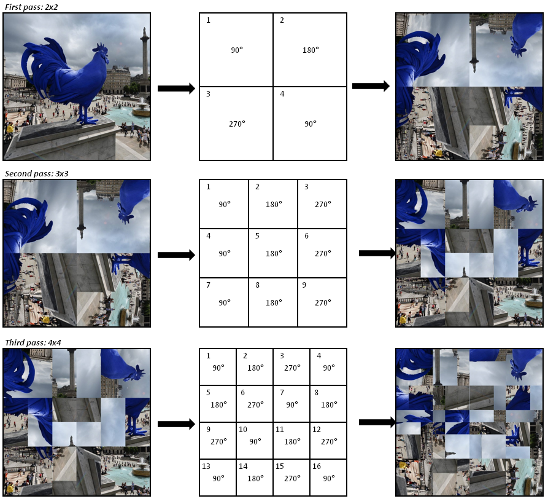

Download the image and unscramble it
This project is maintained by richard-shepherd
Your task is to download the scrambled image attached to this page and unscramble it. The unscrambled image will tell you what to do next.
Here is how the scrambling is done for an example image: 
This is repeated for a number of passes, up until we have processed an n*n grid. To make things a little harder, we will not tell you what n is!
The sizes and positions of the rotated boxes are calculated using integer maths. For example, if the image size is 1050 x 1050 and we are using a 4 x 4 grid, the box size will be 262 x 262. This will leave two pixels unrotated at the right-hand and bottom edges of the image.